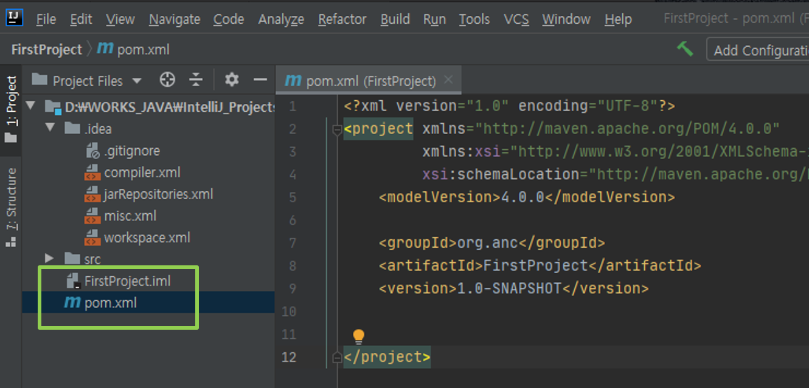

JUnit5 실습 환경¶
환경 설정¶
1. JKD 설치¶
-
JDK SE Download (또는, 줄루-OPEN JDK로 설치)
-
JDK SE 8 ( jdk-8u251-windows-x64.exe 권장). 최신은 SE 14 버전.
-
시스템 변수
path에 설치한 JDK 추가 하기- 제어판 -> 시스템 -> 정보 -> 시스템정보 -> 고급시스템설정/환경변수
- JDK의 실행 파일 위치
C:\Program Files\Java\jdk1.8.0_251\bin추가
-
명령 프롬프트창에서
java -version실행해서 확인.
2. Maven 설치¶
-
자바 프로젝트의 빌드를 자동화 해주는 도구
- Build, Package, Test, Report, Release
-
IntelliJ 를 설치해서 사용한다면 따로 설치할 필요 없음.
- http://maven.apache.org/download.html (Binary zip archive-3.6.3 다운로드)
- zip 파일을 압축해제, bin폴더아래의 내용을 원하는 경로로 이동(C:\Program Files)
-
환경 변수 설정
- 시스템변수
MAVEN_HOME등록 :C:\Program Files\apache-maven-3.6.3 - 환경변수
PATH편집 :%MAVEN_HOME%\bin추가
- 시스템변수
-
명령 프롬프트창에서
mvn -version실행해서 확인.
3. IntelliJ 설치¶
- JUnit 실습 및 팀 프로젝트를 위한 IDE
- https://www.jetbrains.com/idea/download/ (Community ver.설치)
- 64-bit laucher, Add PATH, Add OpenAsPJ, Create Assoc/.java 체크후, 설치
Maven 관련 설정 파일
- MAVEN_HOME/settings.xml: 모든 사용자에 적용되는 전역적인메이븐 설정 정보
- USER_HOME/.m2/setting.xml: 특정 사용자에 적용되는 메이븐 설정 정보
4. hamcrest, mockito, approvaltests¶
- https://mvnrepository.com/ 에서
필요모듈/ver.의 jar화일다운로드- 예> mockito 1.10.19
- MVN Repository에서 mockito 를 검색해서 원하는 버전을 클릭하면 다음과 같은 화면을 볼 수 있다.

- 그림의 화살표가 가리키는 Maven의 dependency 정보를 얻을 수 있다.
<!-- https://mvnrepository.com/artifact/org.mockito/mockito-all -->
<dependency>
<groupId>org.mockito</groupId>
<artifactId>mockito-all</artifactId>
<version>1.10.19</version>
<scope>test</scope>
</dependency>
<!-- https://mvnrepository.com/artifact/org.hamcrest/hamcrest-all -->
<dependency>
<groupId>org.hamcrest</groupId>
<artifactId>hamcrest-all</artifactId>
<version>1.3</version>
<scope>test</scope>
</dependency>
<!-- https://mvnrepository.com/artifact/com.approvaltests/approvaltests -->
<dependency>
<groupId>com.approvaltests</groupId>
<artifactId>approvaltests</artifactId>
<version>4.0.2</version>
</dependency>
Intellij 시작하기¶
Maven Project 해보기¶
- Maven Project 생성하기
- File -> New -> Project 에서 Maven 선택

- 프로젝트 이름(FirstProject), 위치 지정
- 필요 시 Artifact / Groupid(optional) 설정
- 프로젝트 정보 확인 (pom.xml, {프로젝트이름}.iml)
- pom : Project Object Model

간단한 예제 작성하기¶
-
.java파일 생성하고 편집- 프로젝트 창에서
src/main/java선택, 마우스 오른쪽 클릭 New -> JavaClass 선택해서.java화일 추가 (예> Hello.java) - Hello.java 작성한다.
- 프로젝트 창에서
-
Hello클래스에 대한 테스트 코드를 작성한다.- Hello.java 편집기의
Hello클래스 이름 위에서 오른쪽 마우스 클릭해서 팝업 메뉴를 생성한다.- - ShowCotextActions -> CreateTest 메뉴를 선택
- HelloTest.java 파일 작성
- 편집기 창에서 우클릭 후,
Add JUnit5.x to classpath선택 - pom.xml junit version 변경 (RELEASE -> 5.5.2)
- 필요한 모듈이 있을 경우, 해당 dependency를
pom.xml에 추가
- Hello.java 편집기의
- 예제 코드
public class Hello {
String printHello(){
System.out.println("Hello!");
return "Hello!";
}
}
import org.junit.jupiter.api.Test;
import static org.junit.jupiter.api.Assertions.*;
class HelloTest {
Hello hello = new Hello();
@Test
void printHello() {
assertEquals("Hello!", hello.printHello());
}
}
- 실행시켜서 결과를 확인한다.

Git에 연동하기¶
Intellij 에서 생성한 Maven 프로젝트를 Git으로 관리하기 위한 설정 방법이다.
-
Github에 Repository를 생성한다.
-
Maven 프로젝트를 Git 로컬 리포지터리로 변경한다.
- vcs -> Enable Version Control Integreation 메뉴를 선택한다.
- 아래 그림의 창에서 보이면 원하는 vcs 종류를 선택한다. Git이 기본으로 설정되어 있다.

- 설정이 끝나면 왼쪽 모서리에 Git 윈도우가 활성화 되는 것을 알 수 있다.
- Github에 생성한 리포지터리를 Remote 로 설정한다.
- vcs -> Remotes.. 를 선택한다.

+아이콘을 눌러서 Remote 리포지터의 URL을 입력한다.

- pull, push 등을 통해 정상적으로 동작하는지 확인해본다.